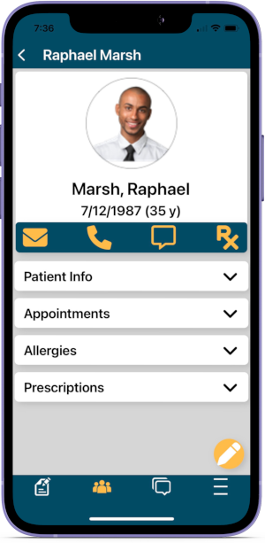
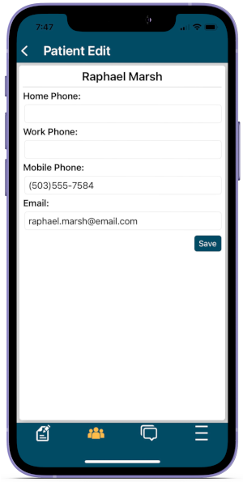

ODMobile Patients
Search patients and view basic patient information from the mobile device.
In ODMobile, tap the Patients tab.

Search for a Patient
Tap into the search bar to begin searching for a patient. Results include any patient with the letter combination anywhere in their name.
View Patient Information
Select a patient from the results to view patient information, appointments, allergies, and prescriptions.
Tap the carets to expand a section and view details.
Contact Options: Available contact options appear based on availability. For example, email is only visible for patients with an email address on file.
- Email: Tap to email the patient. The default email app on the user's phone opens.
- Phone: Tap to open an options window. Choose whether to call the patient, text the patient, or copy the phone number. If calling, the default call app on the user's phone opens.
- Text: Tap to text the patient.
- eRx: Tap to send a prescription through DoseSpot. Note: DoseSpot opened via ODMobile is scaled for optimized mobile viewing. The mobile view includes the same features and functionality as the full desktop version. Steps noted in the DoseSpot link above are the same for both mobile and desktop versions.
Edit Patient Information
Tap the Pencil icon to edit basic patient information.
Tap Save to save changes.